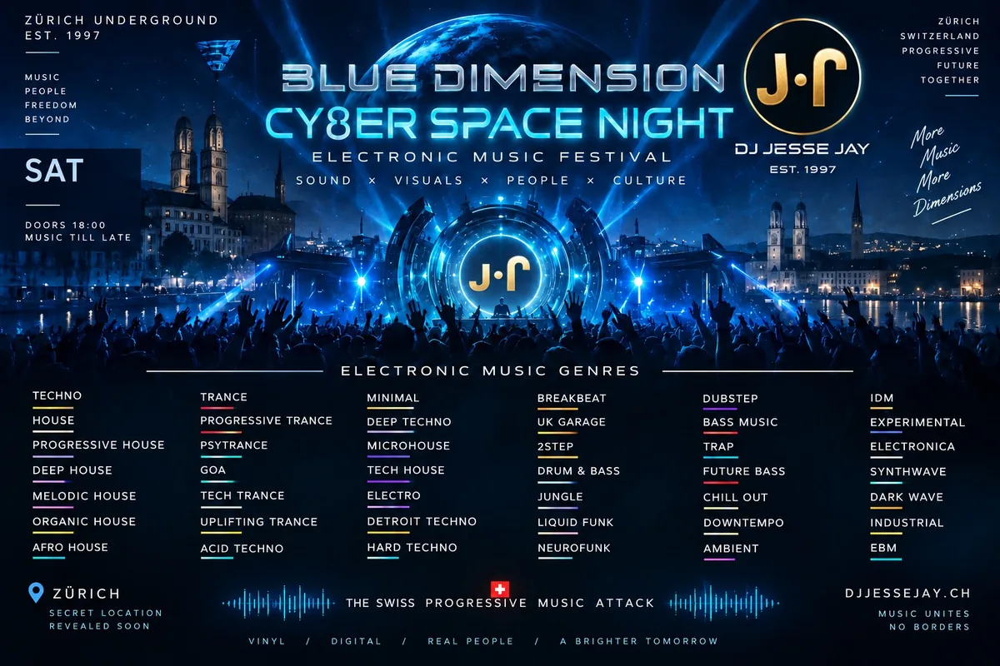

Events
Archiv der Sessions, gruppiert nach Event-ID.

Event 992
1 Tracks · 0 Fotos
- Housemusic · anhören
Event 826
1 Tracks · 0 Fotos
- Progressive-House, Tech-House · anhören

Event 821
1 Tracks · 0 Fotos
- 5min hiphop 355min electro space · anhören
Event 816
1 Tracks · 0 Fotos
- elektronisch · anhören
Event 162
1 Tracks · 0 Fotos
- progressive · anhören
Event 128
1 Tracks · 0 Fotos
- Progressive-Tech House · anhören
Event 126
1 Tracks · 0 Fotos
- progressive-goa · anhören
Event 109
1 Tracks · 0 Fotos
- progressive · anhören
Event 102
1 Tracks · 0 Fotos
- groovy deep'n'progress · anhören
Event 97
1 Tracks · 0 Fotos
- progressive · anhören
Event 87
1 Tracks · 0 Fotos
- JingleBeats · anhören
Event 84
1 Tracks · 0 Fotos
- progressive · anhören
Event 71
1 Tracks · 0 Fotos
- SexyProgressive · anhören
Event 65
1 Tracks · 0 Fotos
- progressive · anhören
Event 63
1 Tracks · 0 Fotos
- progressive · anhören
Event 49
1 Tracks · 0 Fotos
- progressive · anhören
Event 48
2 Tracks · 0 Fotos
Event 47
1 Tracks · 0 Fotos
- progressive · anhören
Event 38
1 Tracks · 0 Fotos
- progressive · anhören
Event 33
1 Tracks · 0 Fotos
- groovy deep'n'progress · anhören
Event 28
1 Tracks · 0 Fotos
- progressive · anhören
Event 27
1 Tracks · 0 Fotos
- Local Progressive · anhören
Event 26
1 Tracks · 0 Fotos
- groovy deep'n'progress · anhören
Event 17
0 Tracks · 6 Fotos · zur Galerie
Event 15
0 Tracks · 19 Fotos · zur Galerie
Event 10
1 Tracks · 0 Fotos
- josefs ruhe special · anhören